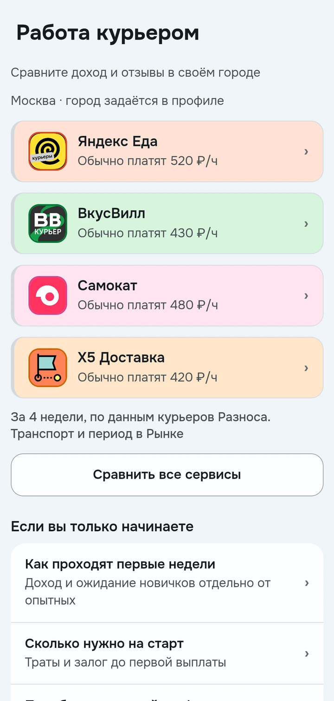

Разнос: сервисы, курьеры и простое спасибо
Настоящие экраны Android-приложения с демонстрационными данными Москвы
Посмотреть сервисы
Условия, сравнение и отзывы курьеров доступны в одном месте

Найти курьера
Публичный профиль показывает те сведения, которыми курьер решил поделиться

Сказать спасибо
Перед отправкой чаевых видно комиссию и сумму, которую получит курьер

Демонстрационные числа не являются обещанием заработка или подтверждением реальных платежей